Networks¶
Analysis of Two Networks¶
Two communication networks are shown below. Complete the table of properties and be prepared to justify your answers.
| 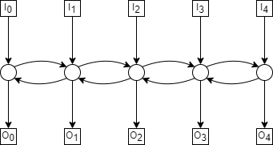 | 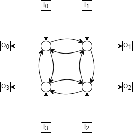 |
Network |
# Switches |
Switch Size |
Diameter |
Max Congestion |
|---|---|---|---|---|
5-path |
5 |
\(3 \times 3\) |
6 |
5 |
4-cycle |
4 |
\(3 \times 3\) |
4 |
3 |
5-path¶
The diameter of the 5-path is 6, with the longer paths from \(I_0—O_4\) as shown below;
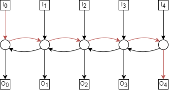The max congestion of the 5-path is 5, where we have the following permutation;
Every path will then have to pass through the central switch, as shown below;
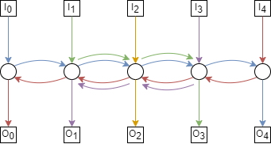There can’t be congestion higher than 5, however, because there are only 5 paths.
4-cycle¶
The diameter of the 4-cycle is 4 when taking the path from diagonally opposite inputs and outputs. For example \(I_0—O_2\), as shown below,
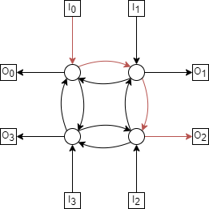The max congestion of the 4-cycle is 3, with the following permutation;
Each switch has at 3 inputs (2 from switches, 1 from terminal) and 1 output. Suppose \(I_0\)’s terminal input crosses through, as well as \(I_1\) and \(I_2\)’s. \(I_3\) is the last remaining terminal, but notice if we attempt to route through the switch adjacent to \(I_0\), there is an unused route (coloured black below).
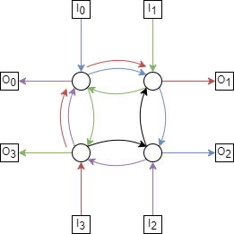Since we always calculate congestion as the ‘maximum minimum’ congestion, this route wouldn’t be chosen. By symmetry, the same is true for any other terminal-adjacent switch. Meaning a congestion greater than 3 is not possible on this network.
Routing in a Benes Network¶
- Within the Benes network of size \(N = 8\), there are two subnetworks of size \(N = 4\).
Put boxes around these. Hereafter, we’ll refer to these as the upper and lower subnetworks.
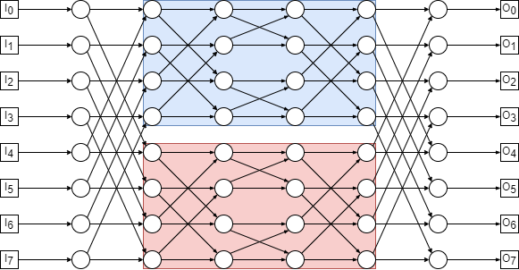
Now consider the following permutation routing problem:
\[ \begin{align}\begin{aligned}\begin{aligned}\\\pi(0) = 3 &\qquad \pi(4) = 2\\\pi(1) = 1 &\qquad \pi(5) = 0\\\pi(2) = 6 &\qquad \pi(6) = 7\\\pi(3) = 5 &\qquad \pi(7) = 4\\\end{aligned}\end{aligned}\end{align} \]Each packet must be routed through either the upper subnetwork or the lower subnetwork. Construct a graph with vertices \(0, 1, \dots , 7\) and draw a dashed edge between each pair of packets that can not go through the same subnetwork because a collision would occur in the second column of switches.
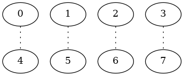- Add a solid edge in your graph between each pair of packets that can not go through the same subnetwork
because a collision would occur in the next-to-last column of switches
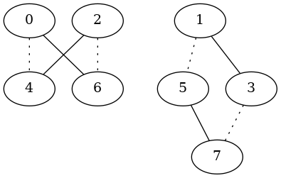
- Color (i.e., label) the vertices of your graph red and blue so that adjacent vertices get different colors.
Why must this be possible, regardless of the permutation \(\pi\)?
A 2-coloring must be possible, because the input constraints (dotted lines) are a matching, and the output constraints (solid lines) are also a matching. As we showed in Graph Theory, problem 1.
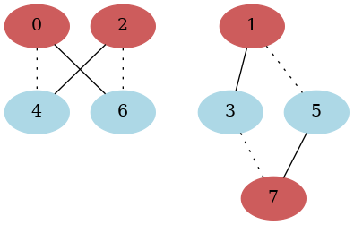
- Suppose that red vertices correspond to packets routed through the upper subnetwork
and blue vertices correspond to packets routed through the lower subnetwork. On the attached copy of the Bene˘s network, highlight the first and last edge traversed by each packet.
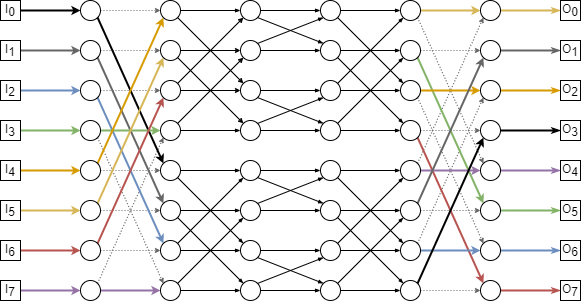
- All that remains is to route packets through the upper and lower subnetworks.
One way to do this is by applying the procedure described above recursively on each subnetwork. However, since the remaining problems are small, see if you can complete all the paths on your own.
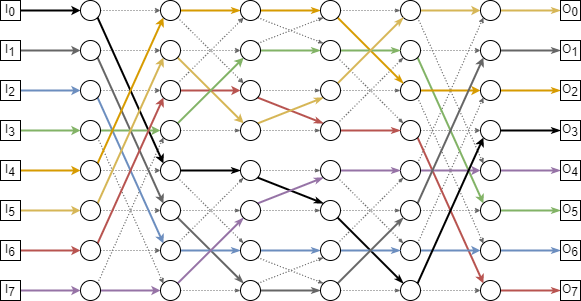